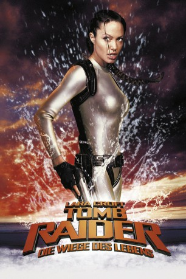

#344 Lara Croft Tomb Raider 2 - Die Wiege des Lebens
Alternativ: Lara Croft Tomb Raider: The Cradle of Life
 
 IMDB-Wertung: 5.5 / 10
IMDB-Wertung: 5.5 / 10  Metascore: 43
Metascore: 43 
Lara Croft befindet sich in einem globalen Wettlauf gegen den größenwahnsinnigen Wissenschaftler Dr. Jonathan Reiss, der mit Hilfe der sagenumwobenen Büchse der Pandora unvorstellbaren Schrecken über die Menschheit bringen will. Um zu verhindern, dass das antike Artefakt in die falschen Hände gerät, verfolgt Lara die Machenschaften von Dr. Reiss und seinem Team über mehrere Kontinente, die nervenzerfetzende Jagd führt sie von Europa über Asien bis hin nach Afrika. Der Wissenschaftler bleibt dabei nicht das einzige Problem, denn auch das chinesische Verbrechersyndikat von Chen Lo interessiert sich brennend für die sagenumwobene Büchse der Pandora.
Jahr: 2003
Dauer: 117 Minuten
FSK: 12
Land: USA Studio: Paramount PicturesTonspuren: DTS - ,
Untertitel:
Auflösung: 1080p (1920x816) Größe: 10649 MB
Genre: Action, Abenteuer, Fantasy
Regisseur:  Jan de Bont
Jan de Bont
Drehbuch: Dean Georgaris, Steven E. de Souza, James V. Hart
Soundtrack: Alan Silvestri
Darsteller:
 Angelina Jolie als Lara Croft
Angelina Jolie als Lara Croft Gerard Butler als Terry Sheridan
Gerard Butler als Terry Sheridan Ciarán Hinds als Jonathan Reiss
Ciarán Hinds als Jonathan Reiss- Chris Barrie als Hillary
 Noah Taylor als Bryce
Noah Taylor als Bryce Djimon Hounsou als Kosa
Djimon Hounsou als Kosa Til Schweiger als Sean
Til Schweiger als Sean Simon Yam als Chen Lo
Simon Yam als Chen Lo Terence Yin als Xien
Terence Yin als Xien Daniel Caltagirone als Nicholas Petraki
Daniel Caltagirone als Nicholas Petraki- Fabiano Martell als Jimmy Petraki
 Jonny Coyne als Gus Petraki
Jonny Coyne als Gus Petraki- Robert Cavanah als MI6 Agent Stevens
 Ronan Vibert als MI6 Agent Calloway
Ronan Vibert als MI6 Agent Calloway Richard Ridings als Mr. Monza
Richard Ridings als Mr. Monza- Marem Hassler als Air Stewardess
- Kate Loustau als Air Stewardess
 Tom Wu als Sean's Man
Tom Wu als Sean's Man- Gerald Kyd als Sean's Man
- Jamie Hayden als Reiss' Guard
- Mark Hampton als Reiss' Guard
 Graham McTavish als Submarine Captain
Graham McTavish als Submarine Captain- Lenny Juma als Village Leader
- Raymond Ofula als Village Leader
- Hezron Ajuala als Village Leader
- Alfred Kalipso als Tribesman
- Vincent Mbaya als Tribesman
- Ace Yonamine als Shay Ling Giant
- Robert Atiko als Armin Kal
- Shirley Chantrell als Shu Mei
- Sang Lui als Shay Ling Messenger
- Elizabeth Seal als Buyer
- Hajaz Akram als Buyer
- Daryl Kwan als Buyer
- Richard Woo als Buyer
- David Kershaw als Buyer
- Ralf Beck als Sean's Man
- Mark Sung als Taipei Father
- Loan Tran als Taipei Mother
- Charlotte Nguyen als Taipei Girl
- Vincent Poon als Taipei Boy
- Tom Yang als Reiss' Guard
- Khan Bonfils als Reiss' Guard
- Jose Cuenco Jr. als Reiss' Guard
- Andrew Joshi als Reiss' Guard
- Michael Wagg als Lead Tech
- Martin Glyn Murray als Submarine Medic
Datei: X:\3-Trilogie(G-M)\Lara Croft Tomb Raider\Lara Croft Tomb Raider 2 - Die Wiege des Lebens (2003, FSK12, 1920x816).mkv seit 17.02.2015
Festplatte: HD Collection-2(A-Z)-3(A-M)
 Es gibt insgesamt 7 Filme in der Gruppe '3-Trilogie(G-M)\Lara Croft Tomb Raider'
Es gibt insgesamt 7 Filme in der Gruppe '3-Trilogie(G-M)\Lara Croft Tomb Raider'